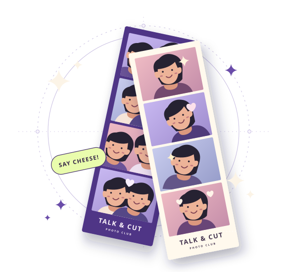

Talk & Cut
VOICE PHOTO BOOTH
오늘을 남기는 가장 쉬운 방법
말하면,
찰칵.
포즈를 잡고 “찍어줘”라고 말해 보세요.
우리만의 네컷이 완성돼요.

VOICE PHOTO BOOTH
오늘을 남기는 가장 쉬운 방법
포즈를 잡고 “찍어줘”라고 말해 보세요.
우리만의 네컷이 완성돼요.

CUT 01 / 04
카메라를 여는 중이에요
프레임과 필터를 골라 사진을 저장해 보세요.